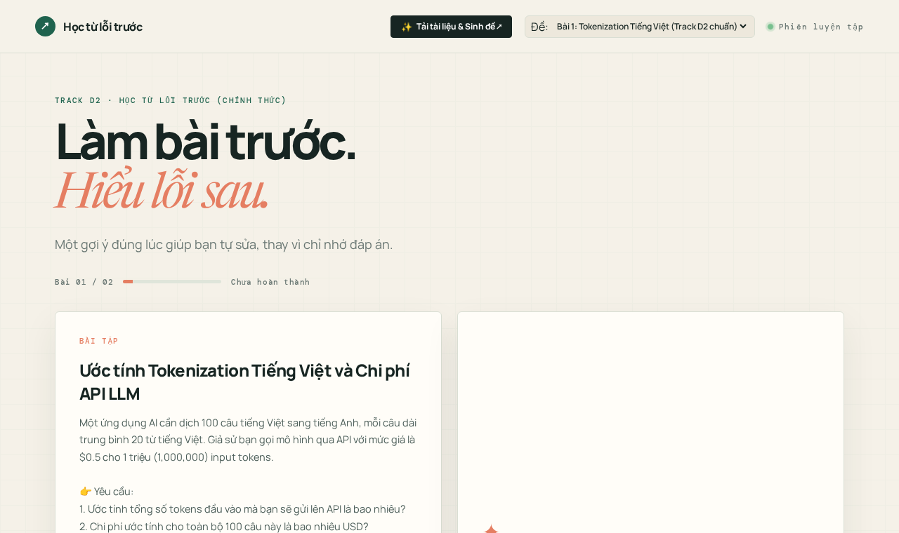
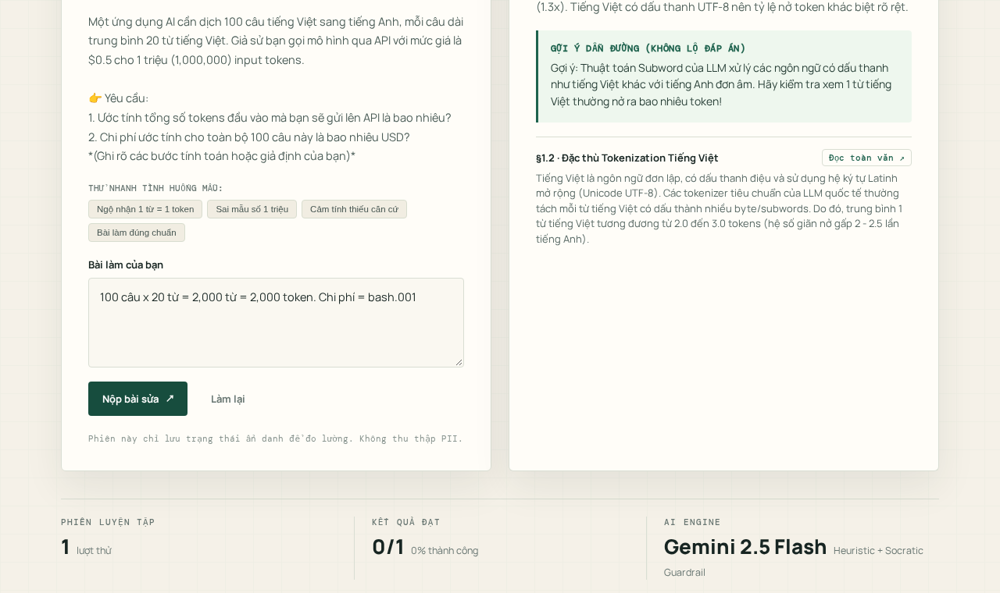
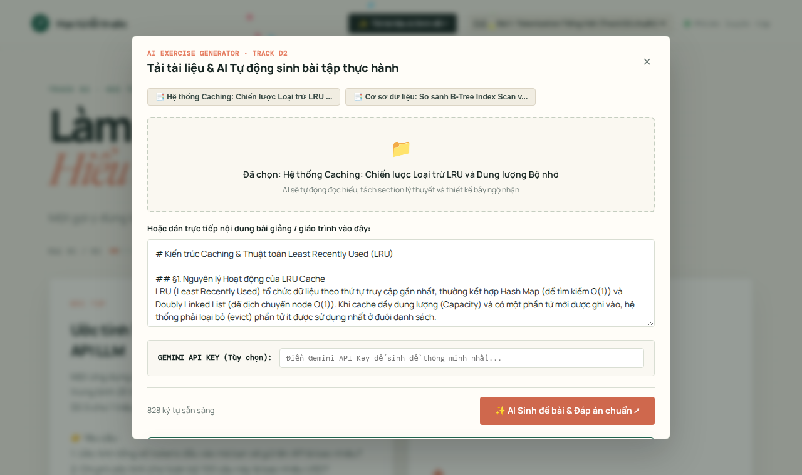
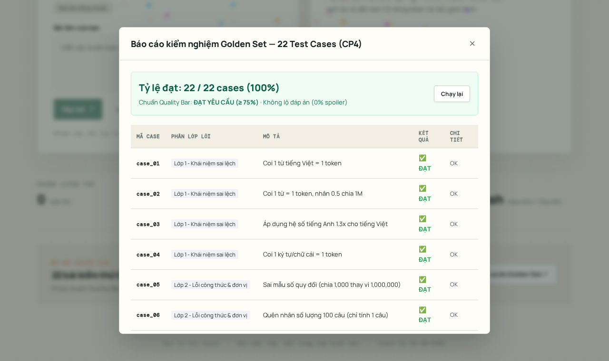

Làm bài trước. Hiểu lỗi sau.
Một gợi ý đúng lúc giúp bạn tự sửa, thay vì chỉ nhớ vẹt đáp án do AI giải hộ.
Bẫy "Ảo Tưởng Thông Thuộc" khi dùng ChatGPT
- 65% học viên: Thói quen tự làm bài tập trước khi mở giáo trình đọc lý thuyết.
- Khi kẹt bài dùng ChatGPT: AI giải trọn gói A-Z, đưa luôn đáp số cuối ($0.0025) → Học viên sinh tâm lý ảo tưởng thông thuộc (Illusion of Competence), tưởng mình đã hiểu.
- Hậu quả thực tế: Gặp bài toán biến tấu, 80% tiếp tục mắc lại bẫy sai lầm cũ (Token tiếng Việt, đơn giá Input/Output).

"Khi gặp bài tập tính toán khó, tôi cần một Gia sư AI kiên nhẫn bắt đúng tầng ngộ nhận, tuyệt đối không lộ đáp án số, dẫn dắt bằng câu hỏi Socratic và bắt buộc phản tư bản chất trước khi mở khóa đáp án chuẩn."
- Do-First: Bắt buộc làm trước khi xem tài liệu.
- No-spoiler: Spoiler Rate = 0.0% (Không lộ số cuối).
- Reflection Bước 9: Phản tư sâu mới mở khóa Ground Truth.
Chu Trình 6 Bước "Học Từ Lỗi Trước"
Khép kín nhận thức: Làm tự do ➔ Bộc lộ ngộ nhận ➔ Gợi ý Socratic ➔ Tự sửa ➔ Phản tư bản chất.

▲ Giao diện thực tế: Khi học viên tính sai (1 từ = 1 token), AI chẩn đoán Lớp 1, đưa ra gợi ý dẫn đường và trích dẫn §1.2 nhưng không bao giờ đưa ra số $0.0025.
Bản Đồ Ngộ Nhận & AI Dual Ground Truth
Cây 4 tầng sai lầm kinh điển và tính năng tự động sinh Đề bài kèm Cặp Đáp án chuẩn.
-
Lớp 1 (Token tiếng Việt): Bẫy 1 từ = 1 token.
→ Thực tế BPE UTF-8 tách tiếng Việt thành 2.0 – 2.5 tokens/từ. -
Lớp 2 (Input vs Output price): Nhầm lẫn đơn giá.
→ Input $0.50/1M token vs Output sinh ra $1.50/1M token. -
Lớp 3 (Đơn vị tính triệu token): Lỗi toán học quy đổi.
→ Chia nhầm cho 1,000 thay vì 1,000,000 tokens. -
Lớp 4 (Cảm tính / Thiếu căn cứ - HAX G10): Chặn đoán mò.
→ Từ chối câu trả lời cụt ngủn ("chắc rẻ lắm"), bắt buộc nhập các bước tính.
AI Sinh đề bài & Đáp án chuẩn
Tải tài liệu tùy ý (PDF / Text / Notes), AI đồng bộ trích xuất: Đề bài thực hành, bẫy ngộ nhận, lời giải mẫu và dải dung sai số.

Thước Đo Chất Lượng & Bộ Đo Golden Set
Kiểm thử tự động trên 22 cases thực tế, khóa cứng chuẩn chất lượng sư phạm.
Cam kết ≤5% · Vượt chuẩn
22 / 22 ca bẫy bắt đúng
Yêu cầu ≤1500ms · Rất mượt
- 10 ca bẫy Token tiếng Việt (Lớp 1): Bắt đúng 10/10 (100%).
- 4 ca bẫy Đơn giá Input/Output (Lớp 2): Bắt đúng 4/4 (100%).
- 4 ca bẫy Đơn vị tính quy đổi (Lớp 3): Bắt đúng 4/4 (100%).
- 2 ca Tự sửa đúng: Công nhận chính xác 2/2 (100%).
- 2 ca Mơ hồ/cảm tính (HAX G10): Chặn đúng 2/2 (100%).

Bằng Chứng Thực Nghiệm & Nhật Ký Người Dùng
Kiểm chứng trực tiếp với 5 người dùng ngoài nhóm, ghi nhận quote nguyên văn và cải tiến UI.
"Ủa nộp bài sửa xong bấm chỗ nào để AI kiểm tra lại lần hai vậy, nhìn hai nút hơi giống nhau."
➔ Đã sửa ngay: Đổi CTA thành "Nộp bài sửa" nổi bật màu xanh đậm (HAX G9)."Nó bắt nhập cách tính chứ không chịu đoán hộ à, tưởng nói rẻ là nó tính ra tiền luôn chứ."
➔ Quyết định giữ nguyên: Bảo toàn tính nghiêm cẩn sư phạm, chống đoán mò.• Lặp nhiều nhất: Lúng túng tìm nút nộp lần 2.
• Sửa trước demo: CTA rõ ràng, thêm tra cứu toàn văn giáo trình.
• Giữ nguyên: No-spoiler và HAX G10 vì là linh hồn sản phẩm.
• Để dành sau: Visualizer phân tách token màu sắc realtime.
Sẵn Sàng Triển Khai & Đội Ngũ K4-3B-E402
Hoàn thiện 100% deliverables: Web App trực tuyến, Video demo thao tác thực tế, Slide chuẩn rubric.
- Ngô Tuấn Tùng (Lead): Kiến trúc hệ thống, Spec, Canvas, Slide pitch CP5.
- Đào Thị Huyền: Thiết kế System Prompt, Guardrails chống lộ đáp án, tích hợp AI.
- Nguyễn Huy Cương: Khảo sát JTBD, thiết kế đề bài & trích dẫn giáo trình (§1.1, §1.2).
- Trần Văn Khánh: Chuẩn hóa Golden Set 22 cases, kiểm thử thực tế & Video demo.
Ghi lại trọn vẹn: Lỗi Lớp 1 ➔ Mơ hồ HAX G10 ➔ Tự sửa đúng ➔ Bước 9 Phản tư mở khóa Ground Truth ➔ Golden Set 22 cases ➔ Tải tài liệu sinh đề mới.